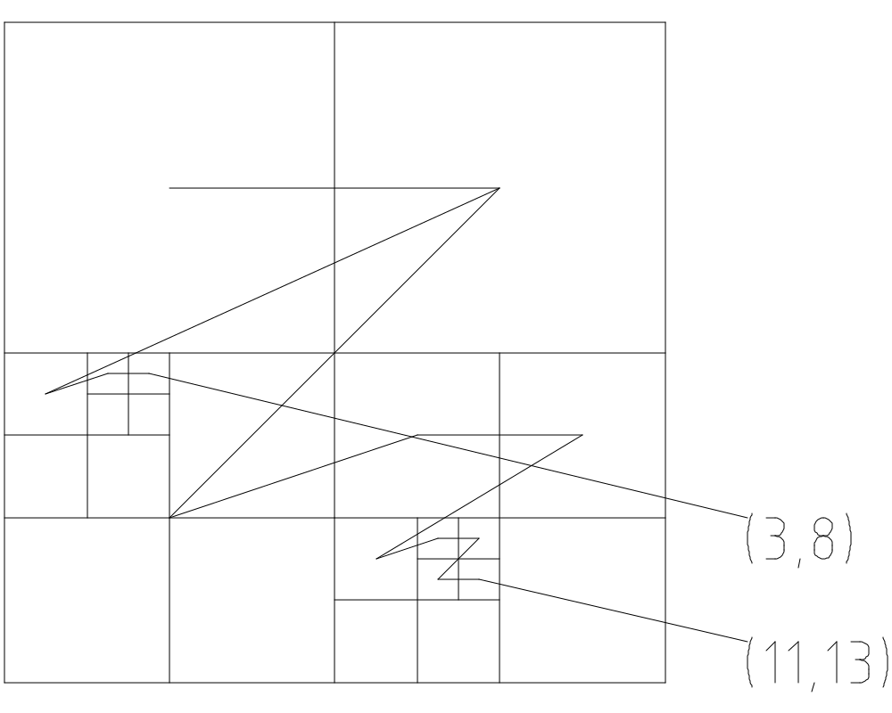

數值製圖 期末作業
等高線數化
今有五千分之一等高線線繪圖大小約 A4、一台 300 dpi 平台式掃描儀、一台 Calcomp 1000 dpi 數化板,請問你要採用數化法或掃描法產生等高線 GIS 圖與 DTM?請詳細說明處理流程,並說明 DTM 成果可能誤差來源與大小?
個人沒有使用過數化板，如果有手冊可以嘗試看看。 會使用掃描儀掃成圖片，依 作業一數化等高線 的流程處理； 這裡只列出大綱：
使用平台式掃描儀掃描原圖為影像檔， 若紙圖過大無法一次掃描，則分成幾個部份掃。
將影像檔讀取到 GIS 軟體內， 並以其中網格點進行幾何改正，消除掃描可能造成的誤差。 若有多個部份，也在此時一同匯入到 GIS 軟體內改正。
匯出成完整的地圖影像檔，使用影像處理軟體如 GIMP 處理。 因為等高線顏色相同，使用依顏色選取即可選取出等高線， 匯出一張只有等高線的影像。
使用 autotrace 或其它將點陣圖轉為向量圖的軟體， 將等高線點陣圖轉為向量圖。
這步可能會使點陣圖的位置資訊遺失，如果要保險， 可以在上一步保留等高線外也保留方格網。
將向量圖匯回 GIS 軟體內，並手動為每條等高線標上高程。 若向量圖沒有位置資訊，可以利用方格網再進行對位一次。
使用內差工具，由等高線內插出 DTM 。
誤差來源
- 地圖的等高線也只是內插出來的，沒有多準。
- 掃描的幾何誤差，只能用方格網內插法改正，不能完全消除。
- 點陣圖中線條有寬度，轉為無寬度的向量圖時可能失真。
- 由等高線內插出 DTM 時，有多種內插方法，各產出不同的結果。
製做 LOD-2 房屋模型
請說明利用高解析 DSM 與真實正射影像製作 LOD-2 房屋模型之程序、 可能遭遇之問題與誤差來源?
利用真實正射影像數化出房屋邊界與屋頂， 每個端點都要數化到。 再利用 DSM 取得每個端點的高程， 重建出 LOD-2 模型。
由於只有正射影像，無法獲得牆面資訊， 只能隨便從資料庫抓一些牆面紋理出來貼。
由於端點都是在有高低落差的地方， 在 DSM 上取該點高度稍有誤差就會從屋頂取到地面上。
產製三角網
參考自 [演算法筆記中有關三角網的部份][演算法筆記三角網] 。
演算法筆記三角網: http://www.csie.ntnu.edu.tw/~u91029/Triangulation.html
路徑簡化
請說明平行管與 Douglas-Peucker 兩種縮編演算法之流程? 若欲從 1/1000 地形圖縮編成 1/5000 地形圖, 其縮編條件或誤差容許值該如何設定?
Douglas-Peucker
- 設定最大容許誤差。
- 將首尾相連為一直線。
- 找出離直線最遠的折點。
- 若折點與直線距離小於容許誤差，則結束。
- 否則首點與折點、折點與尾點，作兩直線。
- 對二直線分別進行步驟 3 。
平行管
- 設定最大容許誤差。
- 用最少條直線擬合折線，
- 並折點與直線的距離需小於容許誤差。
- 可以取直線的交點，或直線交會處的折點進行簡化。
容許誤差
肉眼可分辨誤差約為 0.5mm ，換算後分別為 0.5m 與 2.5m 。 最小可以分別設定為 0.5m 與 2.5m 。
而紙圖成圖時，線條粗細也會影響。 若主要幹道畫成 5mm 寬， 主要幹道的容許誤差可以是 2.5mm ， 也就是實際的 2.5m 與 12.5m 。
資料模型
請比較向量、網格、物件導向三種數值地圖資料模型之優缺點?
向量與網格
向量式模型是記錄幾何特徵。 記錄一個圓、圓的半徑、圓的中心； 折線的每個折點位置。
而網格是用一樣的單元記錄現象。 如果是記錄高程，就是一個很大的矩陣， 每一個元素是一個格子，記錄對應點的高程。
相比向量式資料，網格資料不能內嵌屬性資料， 因為網格式資料是均質的，只能記錄每個格子內部如何， 而沒有 這些格子是同一區域，是同一棟房屋 的概念。 向量式資料則可以為每個幾何形狀加上屬性， 因為每個形狀都是獨立的。
網格資料如果過度放大，會有鋸齒的現象。 向量資料則不會，但這不代表向量資料不會失真。 如果當初建置向量資料，要求的精度只到公尺等級， 雖然理論上向量資料可以無限放大， 但放大的結果不代表地物就真得在該點上。
物件導向
其實向量資料已經有一點物件導向的概念， 將一個個形狀視為物件，並可以擁有屬性， 像 arcgis 的 shape file 。
對外，物件包裝了內部的實作細節。 例如讀取線段長度時， 傳統需要先判斷線段是弧線或折線。 弧線則要讀取圓心、圓心角、半徑，再行計算； 折線需依序讀取每個折點的座標，再一一計算距離。
對物件導向而言， 則用一個介面統一定義了線段這個父類所有的屬性與方法， 各子類再自行依照內部的資料結構， 實作出對應的方法，計算各自的屬性。
優點是架構完整，可擴展性高。 缺點是實作複雜，常必須配合軟體使用。
Morton 編碼
請圖解說明 Morton(4,11,13)與 dMorton(3,133)兩函數之結果?

11 (10) = 1011 (2)
13 (10) = 1101 (2)
Morton(4,11,13) = 11100111 (2) = 3213 (4) = 231 (10)
dMorton(3,133) = dMorton(3, 10000101 (2)) = dMorton(3, 2011 (4))
i = 0011 (2) = 3 (10)
j = 1000 (2) = 8 (10)